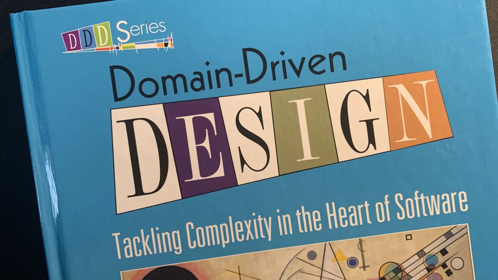
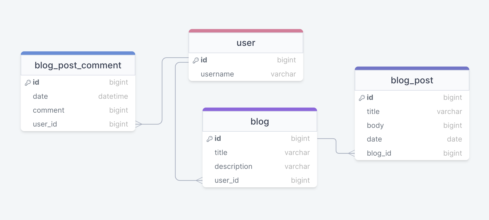

Any lawyer will tell you that legal contracts must follow very specific rules, otherwise they can be deemed invalid: you simply cannot type whatever you want in a contract, it must follow a specific structure, use specific legal terms and so forth. In the case of software agencies, these must pe paired with a very precise set of specifications. Trust me, I’ve been there.
Even if you aren’t an agency, there is still value in spending extra time and effort on defining what it is you want, because building something takes a lot more time than thinking about what you want to build.
Think of specs as a contract between the product owner and the development team. Even if nobody gets sued, there is a risk of time being spent on implementing the wrong thing. This in turn can lead to rebuilding portions of the application under time pressure, frustration in the team, people trying to shift blame, etc. While developers can ask for clarifications if they don’t understand something, sometimes there are unknown unknowns, or they simply might have thought they understood everything.
I’ve been in situations where I thought I understood the requirements, the technical lead thought he understood them, the UX designer thought the same, and each of us understood it quite differently. Complex domains might involve hundreds of types of domain objects: products, records, items, comments, tasks, categories, accounts, users etc.
Domain Driven Design
A PO can have a good understanding of what the client wants, but if that is not properly communicated to the devs, it’s a problem. In general, communication is subjective, because people project their own views and biases on whatever nuggets of information they get.
None of this is new, and there have been several attempts to tackle this problem. One of them is Domain Driven Design.
Eric Evan’s book is quite dense and probably not the easiest read, but if I could take away a few key concepts, they would probably be these:
- Ubiquitous language: always refer to business entities in a way that’s consistent. Don’t refer to a record as a log, for example. A user and an account might be two different things (e.g. a user might have access to multiple accounts).
- Bounded contexts: if your logic is complex, you might be able to draw boundries around various sections, which helps with abstracting away these sections.
- Continuous collaboration: there needs to be a way in which members of the team communicate.
To me, DDD is a lot like pesudo code. Pseudo code is nice because you don’t have to be familiar with all the all the syntax details specific to a specific programming language, but
Which means a few things:
- The table in the database must be named the same way the PO refers to it.
- The UX labels must be consistent.
- Variables, etc. must adehere to the convetion.
This sounds self explanatory, but you’d be surprised how many projects don’t follow this convention.
Tooling
We need a tool to sketch this down. And there’s nothing better than a database tool, because we can capture the properties of the objects, the relationships between them etc.
It’s worth mentioning that this is the actual domain model, the actual database schema might actually contain more (internal) columns.
Behavior Driven Development
Most developers are familiar with TDD, and if your team has the budget for it (it can be expensive, and some teams tend to go with the 20/80 rule, where they only cover the 20% of the code that’s responsible with the majority of the bugs).
Feature: Account Holder withdraws cash
Scenario: Account has sufficient funds
Given The account balance is $100
And the card is valid
And the machine contains enough money
When the Account Holder requests $20
Then the ATM should dispense $20
And the account balance should be $80
And the card should be returned“The account balance is $100”, “the card is valid” are called bindings. They actually translate to code.
Consider that each of these lines: a lot of these lines translate to code. Cucumber creates a set of constraints for the product owner, similarly to how a control library with a theme would constrain the designer.
@When("^I click the \"([^\"]+)\" button$")
public void clickButton(String buttonName) {
// Code to click the button with the specified name
}What is interesting is that by getting POs to write specs in Cucumber, we have created a framework of specs.
Advantages / Disadvantages
Just as TDD, BDD can be costly in terms of time to implement.